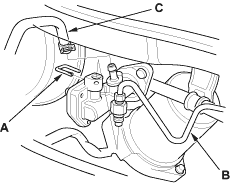
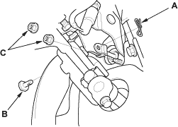
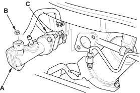
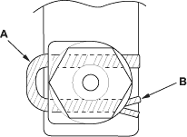

NOTE: Do not spill brake fluid on the vehicle; it may damage the paint; if brake fluid does contact the paint, wash it off immediately with water.
- Remove the brake fluid from the clutch master cylinder reservoir with a syringe.
- Remove the retaining clip (A). Disconnect the clutch line (B). Plug the end of the clutch line with a shop towel to prevent brake fluid from coming out.

- Disconnect the reservoir hose (C) from the clutch master cylinder reservoir. Plug the end of the reservoir hose with a shop towel to prevent brake fluid from coming out.
- Pry out the lock pin (A), and pull the pedal pin (B) out of the yoke. Remove the master cylinder mounting nuts (C).


- Remove the clutch master cylinder (A).

- Remove the O-ring (B) and the clutch master cylinder seal (C) from the master cylinder.
- Install the clutch master cylinder in the reverse order of removal. Install a new O-ring. Tighten the master cylinder mounting nuts to 13 Nm (1.3 kgf/m, 9.4 lbf/ft). Make sure the tabs on the master cylinder hose clamps are pointed in the directions shown.
- To prevent the retaining clip (A) from coming off, pry to open the tip of the retaining clip (B) with a screwdriver.

- Bleed the clutch master hydraulic system (see step 11 on page 12-9).
NOTE: The reservoir filling is covered in the bleeding procedure.